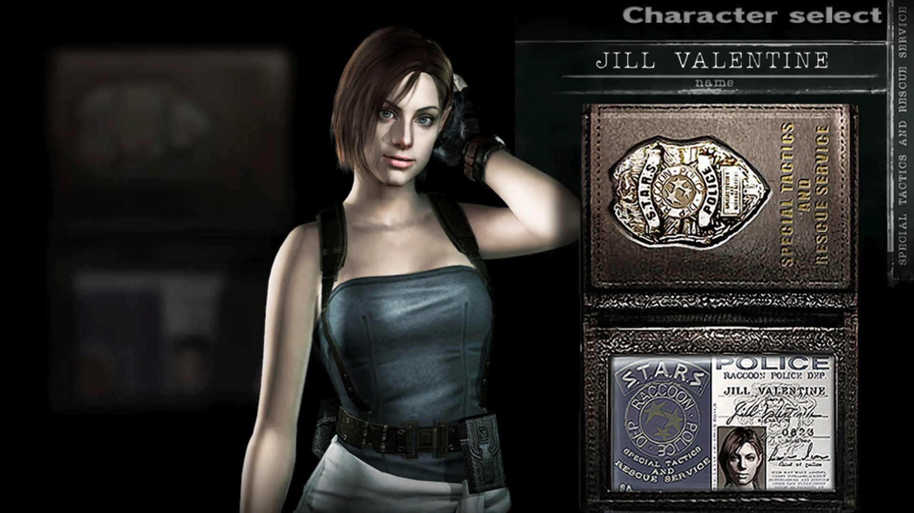
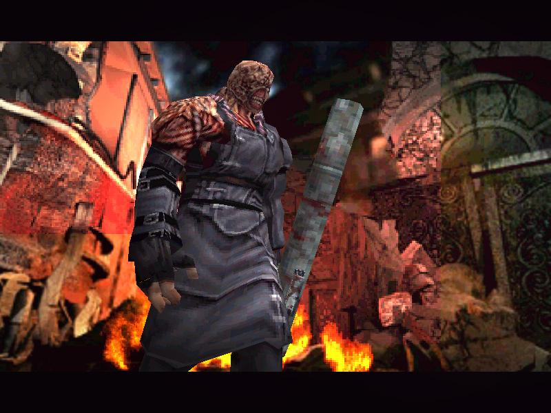

เหตุการณ์ในภาคนี้เกิดคู่ขนานกับเหตุการณ์ในภาค2
หลังจากที่สถานการณ์ซอมบี้อาละวาดได้แพร่ระบาดไปทั่วเมืองแรคคูน สถานีตำรวจประจำเมืองกลายเป็นสถานที่สุดท้ายสำหรับผู้รอดชีวิต ตำรวจได้พยายามยิงสกัดกั้นเหล่าซอมบี้แต่ก็ไม่สามารถต้านทานพวกมันได้ เหล่าตำรวจได้เสียชีวิตไปเกือบหมด
เป็นคืนเดียวกันที่อัมเบลล่าได้ส่งหน่วยUmbrella Biohazard Countermeasure Survice (U.B.C.S.) เข้ามาเพื่อช่วยเหลือทีมตำรวจ แต่พวกเขาไม่รู้เกี่ยวกับแผนลับของอัมเบลล่ามีเพียง นิโคไลน์ (Nicoline) เท่านั้นที่อัมเบลล่าสั่งให้เข้ามาเก็บข้อมูล ถึงแม้หน่วย U.B.C.S. จะถูกส่งมาถึง 120 คน แต่ก็ไม่สามารถต่อสู้กับเหล่าซอมบี้ได้ไหวพวกเขาเสียสมาชิกในทีมไปมากมายเช่นกัน

Jill Valentine
ส่วน จิล วาเลนไทน์ (Jill Valentine) ที่ลาออกหน่วย S.T.A.R.S. และได้ตัดสินใจเข้ามาในเมืองแรคคูนเพื่อหาข้อมูลเกี่ยวกับอัมเบลล่า เริ่มพยายามหาที่จะทางออกจากเมืองเนื่องจากสถานการณ์ซอมบี้อาละวาดนั้นเกินจะควบคุมจิลตัดสินใจหลบหนีเข้าไปในโกดังแห่งหนึ่งเพื่อรอความช่วยเหลือจากหน่วยกู้ภัย ณ โกดังแห่งนี้ เธอได้พบกับผู้รอดชีวิตหนึ่งคนคือ ดาริโอ รอสโซ่ (Dario Rosso)
จิลรอความช่วยเหลือถึงหนึ่งวันเต็มๆ แต่แล้วก็ไม่มีหน่วยกู้ภัยมาอย่างที่หวังไว้ จิลตัดสินใจหนีไปหาที่ปลอดภัยแห่งอื่นพร้อมชวนให้ดาริโอ้ไปกับเธอด้วย แต่เขากลับปฏิเสธและขังตัวเองไว้ในโกดังจนสุดท้ายเขาก็เสียชีวิต
ระหว่างทางที่จิลพยายามหาทางหลบหนีออกเมือง เธอได้พบกับ แบรด วิคเกอร์ (Brad Vickers) อดีตคนขับเครื่องบินประจำหน่วย S.T.A.R.S ทีมเอลฟ่าเขาเตือนเธอเกี่ยวกับสัตว์ประหลาดตัวหนึ่งที่กำลังไล่ล่าฆ่าสมาชิกหน่วย S.T.A.R.S ที่ยังมีชีวิตรอดอยู่และเขาก็ได้ขอแยกตัวหนีไปก่อน
เมื่อจิลเดินทางมาถึงสถานีตำรวจ เธอก็ได้พบกับแบรดอีกครั้ง ครั้งนี้เขากำลังเผชิญหน้ากับสัตว์ประหลาดตัวใหญ่ที่มีชื่อว่า Nemesis-T Type

Nemesis
แบรดถูกฆ่าตายต่อหน้าต่อตาของจิล เมื่อเขาตายแล้ว Nemesis จึงหันมาเล่นงานจิลที่เคยเป็นสมาชิกหน่วย S.T.A.R.S
จิลตัดสินใจหลบหนีเข้าไปในสถานีตำรวจและเธอได้พบกับ มาร์วิน บรานาจ (Marvin Branagh) หนึ่งในเจ้าหน้าที่ตำรวจที่อพยพผู้รอดชีวิตเข้ามาในสถานีตำรวจกำลังสลบอยู่ (เขาคือตำรวจที่ลีออนกับแคลร์เจอในภาค2 ก่อนที่เขาจะหนีออกจากสถานีไปทำให้เรารู้ได้ว่าเรื่องของจิลเกิดขึ้นก่อนที่ลีออนและแคลร์จะเข้ามาในสถานี)
หลังจากที่เจอมาร์วิน เธอเดินขึ้นไปยังออฟฟิศของหน่วย S.T.A.R.S. และได้พบว่ามีสัญญาณจากเครื่องส่งวิทยุของชายคนหนึ่งที่ชื่อว่า คาร์ลอส โอลิเวร่า (Carlos Oliveira) เขาบอกว่าตัวเองพัดหลงกับเพื่อนร่วมทีม จิลจึงตัดสินใจออกตามหาคาร์ลอสเพื่อช่วยเหลือเขา
จิลได้มาพบกับคาร์ลอสในร้านอาหารแห่งหนึ่ง โดยคาร์ลอสแนะนำตัวเองว่าเขาคือคนจากหน่วย U.B.C.S. ที่เข้ามาเพื่อช่วยเหลือประชาชนแต่จิลไม่ไว้ใจคาร์ลอสเพราะเป็นเขาของอัมเบลล่า ส่วนคาร์ลอสเขาบอกว่าตนเองเป็นแค่ทหารที่อัมเบลล่าจ้างมาเท่านั้นและเขาได้วิ่งหายไป
หลังจากที่จิลมาถึงรถไฟเธอก็ได้พบกับนิโคไลน์และ มิคาเอล (Micalle) ที่บาดเจ็บอยู่และยังได้พบกับคาร์ลอสอีกด้วย โดยครั้งนี้คาร์ลอสขอให้เธอร่วมมือช่วยเหลือพวกเขาให้ผ่านภารกิจนี้ แต่นิโคไลน์ไม่เห็นด้วยเพราะรู้ว่าจิลคยเป็นคนของหน่วย S.T.A.R.S. ที่ Nemesis กำลังไล่ตามอยู่
คาร์ลอสพยายามพูดหว่านล้อมนิโคไลน์จนสุดท้ายเขาก็ยอมให้จิลเข้าร่วมกลุ่มด้วยพร้อมบอกจิลถึงเป้าหมายที่พวกเขาคือเดินทางไปยังหอนาฬิกาเซนต์ มิเชล ด้วยรถราง
แต่ตอนนี้รถรางยังไม่สามารถวิ่งได้พวกเขาจึงแยกออกไปค้นหาอุปกรณ์ ในระหว่างที่แยกกันนั้นนิโคไลน์ได้สร้างสถานการณ์ให้ตัวเองดูเหมือนตายไปแล้วเพื่อปลีกตัวออกมาจากคนอื่นๆ เขาจะได้ปฏิบัติภารกิจที่อัมเบลล่ามอบหมายได้สะดวก
หลังจากเตรียมอุปกรณ์เรียบร้อย รถรางก็เริ่มมุ่งหน้าไปยังหอนาฬิกาเซนต์มิเชลแต่ในระหว่างที่รถรางกำลังวิ่งอยู่นั้น Nemesis ได้บุกขึ้นมายังรถราง
มิคาเอลที่บาดเจ็บอยู่ได้อาสาล่อความสนใจจาก Nemesis ให้และสุดท้ายมิคาเอลได้ตัดสินใจสละชีพดึงสลักระเบิดตัวเองจน Nemesis กระเด็นตกรถรางไป
แรงระเบิดทำให้รถรางสูญเสียการควบคุมพุ่งเข้าใส่กำแพงอย่างรุนแรง แต่โชคดีที่จิลและคาร์ลอสไม่บาดเจ็บมากแถมพวกเขายังอยู่ไม่ห่างจากหอนาฬิกามากนัก พวกเขาเข้าไปในหอนาฬิกาและส่งสัญญาณให้เฮลิคอปเตอร์ออกมารับ

Nemesisที่พยายามตามล่าจิล
ไม่นานเฮลิคอปเตอร์ดังกล่าวก็มุ่งมาที่หอนาฬิกาแต่ระหว่างที่กำลังบินอยู่นั้น Nemesis ที่ยังไม่ตายได้ใช้ Rocket Launcher ยิงใส่เฮลิคอปเตอร์ตกและพุ่งเข้ามาจู่โจมจิลจนเธอติดเชื้อ
คาร์ลอสที่อยู่ในเหตุการณ์ใช้ปืนสาดกระสุนใส่ Nemesis เพื่อดึงความสนใจและมันได้ผล Nemesis หัน Rocket Launcher มายิงใส่เขาแทนแต่ดันพลาดไปโดนกำแพงก่อให้เกิดระเบิดใส่คาร์ลอส เขาใช้แรงเฮือกสุดท้ายก่อนที่เขาจะสลบ ยิงปืนใส่ Nemesis อีกครั้งจน Rocket Launcher กระเด็นหลุดจากมือของมัน
Nemesis ได้เข้าต่อสู้กับจิล สุดท้ายเธอก็ทำให้มันล่าถอยออกไปได้และเธอเองก็หมดสติไปเช่นกัน คาร์ลอสที่ฟื้นขึ้นมาได้ก่อนก็พาจิลที่สลบอยู่ไปพักที่ห้องสวดมนตร์ของหอนาฬิกาเซนต์มิเชล
จิลสลบไปตั้งแต่กลางดึกของวันที่ 28 จนถึงช่วงเช้ามืดของวันที่ 1 ตุลาคม หลังจากที่เธอฟื้นขึ้นมาเธอก็พบว่าตนเองนั้นติดเชื้อไวรัสไปซะแล้ว คาร์ลอสจึงอาสาไปหาวัคซีนจากโรงพยาบาลที่อยู่ใกล้เคียงมาให้
ในระหว่างที่เขากำลังหาห้องเก็บวัคซีนภายในโรงพยาบาล เขาก็ได้พบกับแพทริคหนึ่งในสมาชิกหน่วย U.B.C.S. เขาเตือนคาร์ลอสถึงคนทรยศภายในหน่วยและในขณะที่แพทริคกำลังเปิดตู้เซฟก็พบว่าเป็นกับดักระเบิด แถมแพทริคก็โดนเข้าไปเต็มๆจนเสียชีวิต ส่วนคาร์ลอสที่ได้วัคซีนมาแล้วก็รีบหนีเพราะพบว่ามีระเบิดเวลาติดตั้งไว้ทั่วโรงพยาบาลไปหมด
หลังจากนั้นเขาก็นำวัคซีนมารักษาจิลได้สำเร็จ ทั้งสองคนได้ตัดสินใจหาทางออกจากเมืองโดยขณะที่เดินผ่าสวนสาธารณะจิลพบห้องลับในกระท่อม
ภายในห้องลับนั้นจิลได้พบกับนิโคไลน์ เขาได้เปิดเผยแผนการของตนเองให้จิลรู้ในขณะที่กำลังจะฆ่าจิลพื้นก็ได้สั่นสะเทือนนิโคไลน์รู้ถึงเหตุของการสั่นนั้นจึงรีบหนีเอาตัวรอดไปก่อน หลังจากจิลออกมาจากห้องลับก็เจอเข้ากับหนอนยักษ์โผล่มาเล่นงาน เธอต่อสู้กับมันและเอาตัวรอดมาได้ หลังจากที่วิ่งทะลุสวนไปก็พบกับสะพานที่สามารถข้ามไปยังโรงกำจัดของเสียที่อยู่ไม่ห่างนัก แต่ระหว่างที่ข้ามสะพาน Nemsis ก็โผล่ออกมาขวางอีกแต่เธอก็สามารถหลบแล้วผลักมันตกลงสะพานไปได้
หลังจากที่จิลเข้ามาในออฟฟิศของโรงงานก็พบคาร์ลอสที่กำลังกลุ้มอยู่ และบอกจิลถึงเรื่องที่ว่ากำลังจะมีจรวดนิวเคลียร์ยิงมายังเมืองแรคคูนทั้งคู่จึงเร่งหาทางหนี
ระหว่างที่หาทางหลบหนีจิลถูกนิโคไลน์เข้าโจมตีอีกครั้ง แต่เขาก็ถูก Nemesis จัดการไปเสียก่อนจากนั้น Nemesis ก็มุ่งเข้าโจมตีจิลอย่างไม่ลดละแต่สุดท้ายเธอก็สามารถจัดการมันได้
เมื่อจิลมาถึงห้องวิทยุคาร์ลอสก็ติดต่อมาพอดี เขาแจ้งให้จิลทราบว่าได้ติดต่อขอความช่วยเหลือมาได้แล้วและเขารออยู่ที่เฮลิคอปเตอร์จิลรีบฝ่าฝูงซอมบี้เพื่อออกไปยังลานจอดเฮลิคอปเตอร์ แต่ระหว่างทาง Nemesis ก็โผล่ออกมาขวางอีกครั้งและคราวนี้มันได้กัดกินซากของ Tyrant แล้วพัฒนาร่างของตัวเองจนถึงขีดสุด
จิลได้พยายามวิ่งหนีและใช้อาวุธพิเศษที่ถูกส่งมาทิ้งไว้ในโรงกำจัดของเสียจัดการ Nemesis และเปิดทางหนีได้สำเร็จ

เมืองแรคคูนที่กำลังถูกทำลาย
หลังจากนั้นจิลก็ได้เดินทางมาถึงลานจอดเฮลิคอปเตอร์ที่คาร์ลอสรออยู่แล้ว ขณะที่กำลังหนีออกมานั้นก็มีจรวดนิวเคลียร์ยิงสวนกลับไปยังใจกลางเมืองแรคคูนพร้อมกับการระเบิดครั้งใหญ่ ในช่วงรุ่งสางของวันที่ 1 ตุลาคม 1998 และตั้งแต่นั้นเมืองแรคคูนก็กลายเป็นเพียงพื้นที่ราบโล่งและถูกลบไปจากแผนที่โลก
ที่มา : http://residentevil.wikia.com
https://www.online-station.net/pc-console-game/view/63883